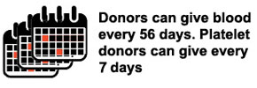

Facts about the blood supply
- Blood cannot be manufactured – it can only come from
generous donors.

- Type O-negative blood (red cells) can be transfused to
patients of all blood types. It is always in great demand and
often in short supply.
- Type AB-positive plasma can be transfused to patients of all
other blood types. AB plasma is also usually in short supply.
Facts
about the blood donation process
- Donating blood is a safe process. A sterile needle is used
only once for each donor and then discarded.

- Blood donation is a simple four-step process: registration,
medical history and mini-physical, donation and refreshments.
- Every blood donor is given a mini-physical, checking the
donor's temperature, blood pressure, pulse and hemoglobin to
ensure it is safe for the donor to give blood.
- The actual blood donation typically takes less than 10-12
minutes. The entire process, from the time you arrive to the
time you leave, takes about an hour and 15 min.
- The average adult has about 10 units of blood in his body.
Roughly 1 unit is given during a donation.
- A healthy donor may donate red blood cells every 56 days, or
double red cells every 112 days.
- A healthy donor may donate platelets as few as 7 days apart,
but a maximum of 24 times a year.
- All donated blood is tested for HIV, hepatitis B and C,
syphilis and other infectious diseases before it can be
transfused to patients.
.jpg) BLOOD BANK
BLOOD BANK